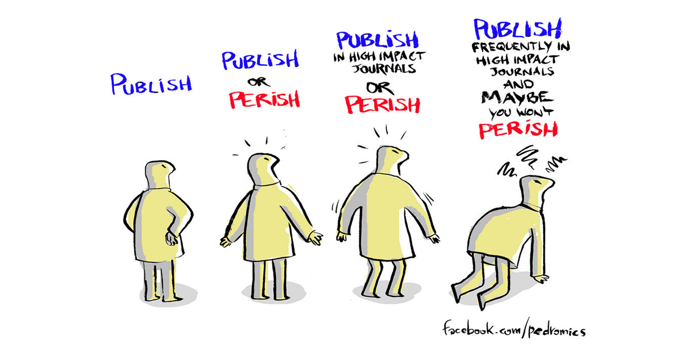
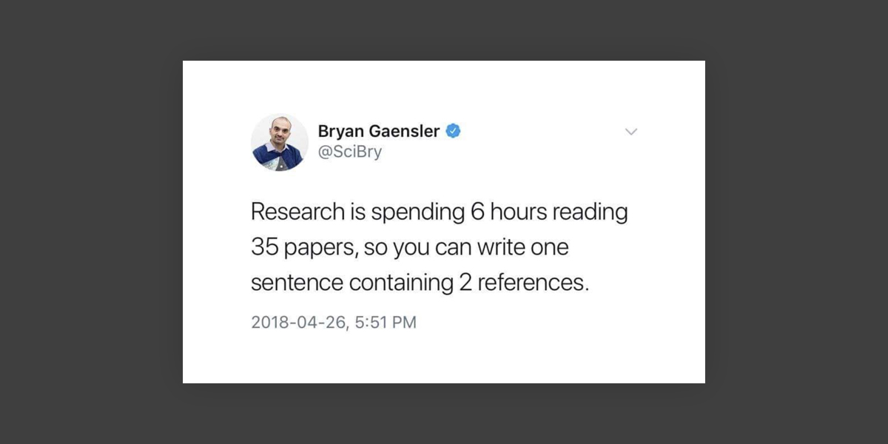
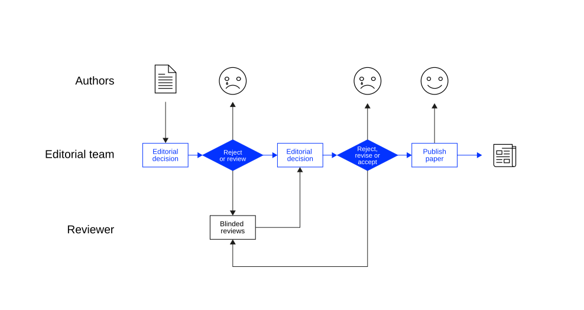

Strategy & process
Academic Writing (AW)
Opening remarks
Motivation
Good papers require good research, good research requires good writing Recker (2021a, p. 168)
Good research
Good research starts with an important phenomenon that (a) deserves attention from academia and (b) relates to a problem with the existing knowledge about this type of phenomenon and takes following steps to address the problem:
Step 1: Motivation (relevance, scope, and research question)
Step 2: Theory (concepts and interrelations)
Step 3: Method (approach to knowledge generation)
Step 4: Analysis (evaluation of data)
Step 5: Interpretation (implications)
If the research was successful, the process ends with the dissemination of the knowledge generated—the publication.
Publish or perish

Publications are key to any academic career
- Publications are key for universities (reputation, funds, etc.)
- Papers make research outcomes last as additions to the body of knowledge
- Papers are the main proof of valid research activity
- Papers are the best way for you to market your skills and creativity
- Papers are the best mechanism for getting feedback about your research
- Papers helps you become a member of a research community
- Writing helps clarify your ideas and fit them into the discussions in the field
Publications are the most important KPIs of a researcher—they shape the career path in academia (Recker, 2021a).
- Number of peer-reviewed publications
(e.g., Assistant Professor in the US requires minimum 8+ journal articles in 6 years to achieve tenure; German universities usually expects around 6 or more A+ journal articles for a W3 professor) - Quality of peer-reviewed publications
Citations to your paper (e.g. H-index1) and the type and quality of the outlet in which your paper is published (e.g., journal impact factor, journal ratings)
Academics are ranked, literally, and publications are the most important factor (e.g., AIS Research Ranking)
Success requires a strategy
In this chapter, we touch three important strategic considerations that will impact your writing:
- Preparation
How to prepare to write a successful paper? - Process
How to set up the process of writing? - Publication
Where to publish good research?
Preparation
Read before you write

Reading is not only required for doing good research, also to get familiar with the “voice” of studies published in the journals you want to submit (Recker, 2021a, p. 171).
Write early and write often
Present early versions of your article early (e.g., on a conference or in roundtable discussions).
Additional tips
- Treat the proposal of your research as being your first paper that will be reviewed.
- Apply the read-interpret-write strategy to keep focused and make the most of your reading (adapted from read-think-interpret strategy in Recker, 2021b).
- Read — before diving into the details, skim the title, abstract, introduction, headings, subheadings, and conclusion; then identify key sections that contribute to your objectives and read those piece by piece
- Interpret — think about the piece’s relevance for your research and evaluate whether there are useful ideas, theories, concept, methods, or findings you should investigate in more depth
- Write — Keep a (digital) notebook where you note down key takeaways, questions, and reflections.
Staff a team
In scientific publications, co-authored articles are the rule, not the exception. You might also consider teaming up for your master-thesis (e.g., selecting related topics that allow for clear individual contributions and synergies).
If you set-up a team, look for complementarity of skills and alignment in working styles (Recker, 2021a, p. 172).
Tasks that can be shared
- Developing an original idea
- Designing a study
- Organizing data collection
- Collecting data
- Analyzing data
- Writing and revising a paper (but not a thesis)
Process
Writing process
Baird (2021, p. 1202) proposes following step-by-step process for writing IS papers
- Identify and clarify your core message
Area of focus, background, tension, resolution, and contribution - Draft the outline of your future manuscript
- Outline the introduction
- Create a literature review synthesis table
- Create table and figures in the findings section
- Add relevant details to the methods section
- Outline the discussion
- Draft the body of the paper
- Write a draft of the abstract, introduction, and discussion
- Go back through the entire paper
Recker (2021a) adds to these points
- Put it in a drawer, take it out, read again, revise again
- Send it to a friendly reviewer and (professional) copy editor
- Submit
Baird (2021, p. 1202) has created a planning worksheet for empirical IS papers. I recommend using the worksheet to draft and refine the core message for your master thesis. This should facilitate the work on your extended proposal.
Publication process

Scholarly publications “count” as scientific publications only if they are peer-reviewed:
- Before a paper is published, it is reviewed by experts in the same field.
- This requires a community of experts in a narrowly defined field who are qualified to conduct an impartial review
- In most cases, this is a double-blind process: Authors and reviewers do not know each other’s identity
The review process is managed by an editorial team (usually a senior and an associate editor):
- An editor is usually a successful senior scientist who is familiar with the manuscript’s subject area
- She makes the decision on whether to publish the manuscript
Thesis timeline
Coming back to your master’s thesis (which might end in an publication)—a focused schedule looks like that:
- Topic identification and proposal (before registration): it depends …
- Literature review and research model/framework: 6 weeks
- Preparation of the empirical part: 2 weeks
- Data collection and analysis: 4 weeks
- Conclusions, recommendations and “finishing”: 4 weeks
When planning the timeline, consider holidays and so called freezes (typically from mid December to mid January), in particular, if you need interview partners–they might be not available during these periods of time.
Publication
Initial remarks
Publication outlets differ widely in quality (Recker, 2021a)
- Good outlets will only accept good papers describing good research
- Publish high-impact papers in high-quality outlets
Open publishing process
- Once you publish, your ideas are out there (you can’t withdraw them)
- Published research will impact your reputation
Once you published a result, you can’t publish it again (one-stop option)
Publication formats
There are a variety of different publication formats.
- (Edited) Books
- Book chapters
- Journal articles
- Conference papers
- Workshop papers
- Technical reports
And many more.
Books
Scholars also write entire books or refereed book chapter in edited books.
However, some universities do not count them at all as publications as part of promotion or tenure decisions.
Implications
- Scholars typically contribute fewer to books than they write journal articles because book chapters are not considered as important (even though peer-reviewed).
- This not imply that the quality of these writings is generally worse (or better) than that of a journal article (at least if good review processes are in place).
Conference proceedings
The purpose of conferences is often to allow scientists to present their ongoing research to the community for opinions, feedback, and new ideas.
Papers presented at conferences are usually intended as an intermediate step in the research and publication process, not as an end goal.
Implications
- Conference papers are usually shorter than journal articles and often describe research in progress.
- The review process for most conferences is much shorter and far less rigorous than for a good journal.
Journals
In most scientific fields, the highest-quality publications are those published in a (defined) number of top-tier journals.
Ranking list evaluate journals based on metrics such as impact factor, readership, editorial board composition, and other criteria, e.g.
- In IS, a consortium of reputable scholars has jointly defined a set of eight elite journals— the https://aisnet.org/page/SeniorScholarListofPremierJournals
- In Germany, the German Association for Business School Professors ranks a list of journals that are relevant to business school researchers—the JourQual
- The Financial Times lists the 50 most renowned journals in the field of management—the FT50 List
The journal impact factor (IF) is a measure of the frequency with which the “average article” in a journal has been cited in a particular year2.
Which outlet to choose?
Journals are selective in what they publish—they only look for certain types of contributions (Recker, 2021a).
Implications
- Inform yourself about the aims and audiences the journal is interested in
- Submit papers only to journals that
- want to publish the type of contribution your research makes and
- address the same audience
- Check if you have cited papers from the journal you aim at
- Read many papers of the journal to familiarize yourself with the style and quality
Deciding on a target outlet
In deciding on a target outlet, consider five questions (Recker, 2021a, p. 175):
- What journals did you consult most when doing the research?
- How well do you know the outlet?
- Do you meet the outlet’s requirements for submissions?
- What is the audience and pool of reviewers?
Who reads the journal, and who publishes in it?
Who will decide on your submission and how? - How low should you go?
Wrap-up
Developing a manuscript takes a good strategy and a lot time and effort.
Recker (2021a) reminds us that …
- Writing is a process that takes time.
Dedicate resources to this task. Make it a priority. - Writing is a skill that must be developed and refined.
Spend time on learning how to write better. Read before you write, learn from professionals, editors, and of course engage in learning by doing. - Writing benefits from reviewing.
While you can learn a great deal from reading papers that have been published, you can often learn even more from manuscripts that were written and submitted but may never be published. - Good writing comes from revising, polishing, and editing, over and over.